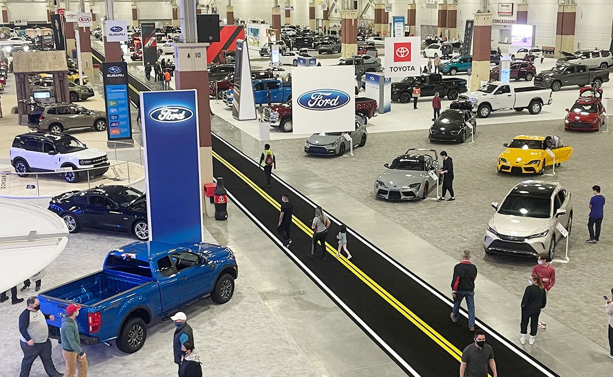
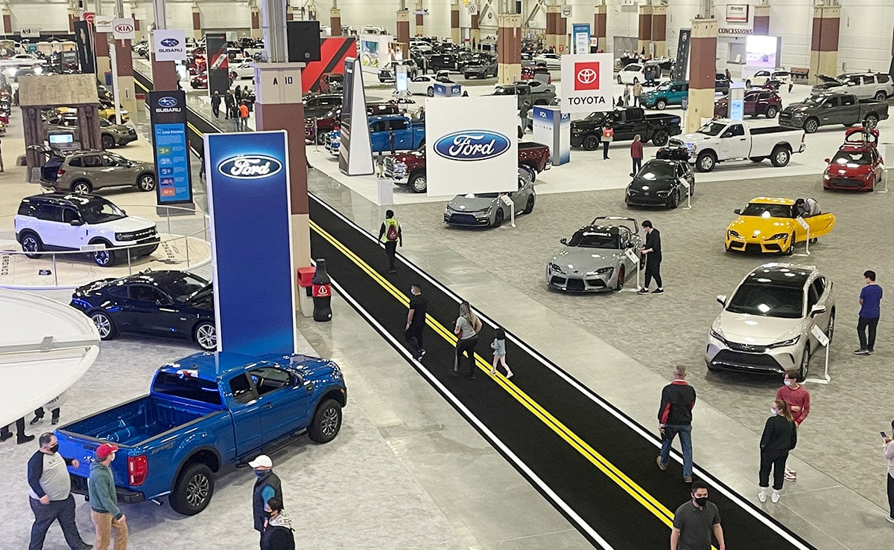
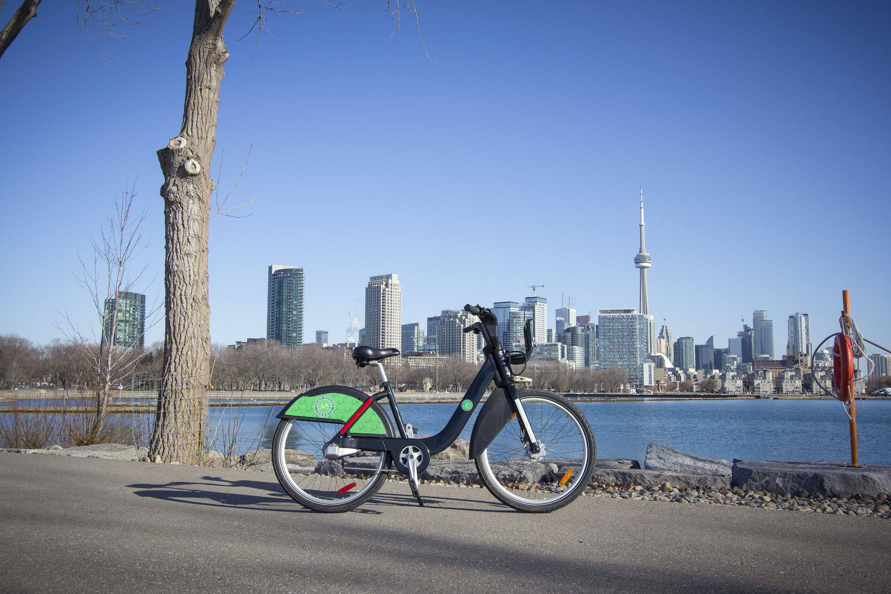

I graduated with my masters in Business analytics from the Schulich School of Business. Prior to this I completed my bachelors in Actuarial Science and minor in economics from Kent state University. I worked for three years as an AML analyst out of Cleveland Ohio and recently completed a Co-op with Deloitte Canada
 

Rising inflation rates have affected economies worldwide highlighting the need for automakers to fine-tune their forecasting methodologies in order to determine ideal levels of output. The project explores in detail how the Cars and Fuel Economy dataset was analyzed to identify which characteristics are important in influencing manufacturing quantities for specific types of vehicles.
.

Tableau dashboards displaying data about Bicycle thefts in the city of Toronto. The dashboards show trends such as bicycle thefts over time, bicycle thefts by color etc
A detailed project which illustrates how education using VR can be integrated into universities. This project includes a gant chart, communication matrix and a time phased budget

For this project various Economics forecasting methods were utilized to understand trends in regards to food service, alochol sales and restaurant sales. The results are displayed in the form of an R shiny application.[Run the code on R studio to view the R shiny app]

This project consisted of data from a streaming services website, Data cleaning, feature engineering, exploritory data analysis was performed. This was followed by decision tree and random forest algos used to make a model which can predict the tier of the user based on 8 features. Precision, recall and f1 score was used to determine the reliability of the models
The two dashboards present a detailed analysis in regards to the funds being dispersed in the different areas of toronto for city development. The second dashboard presents additional details about the amount of funds being dispersed in different categories
{kind=link}